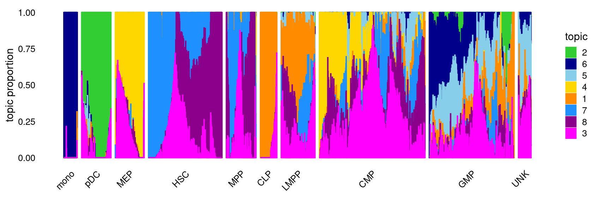
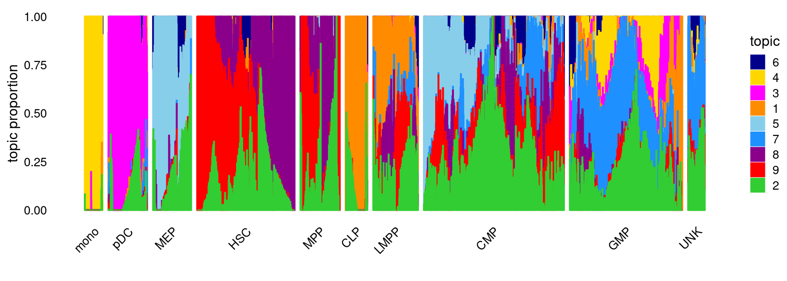
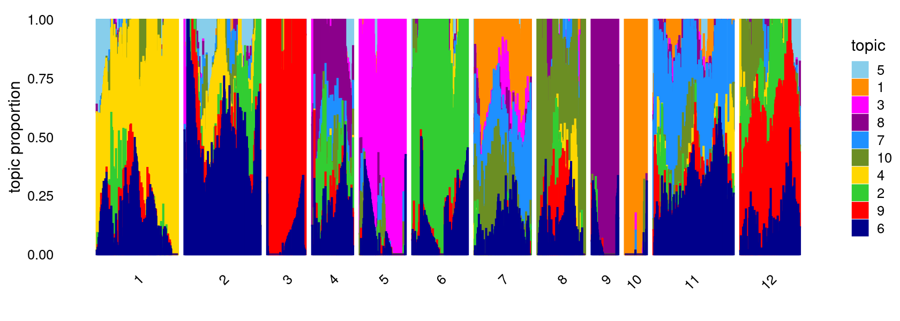
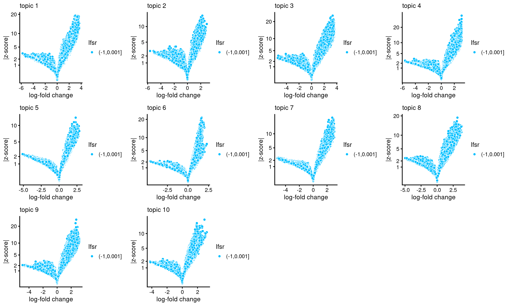
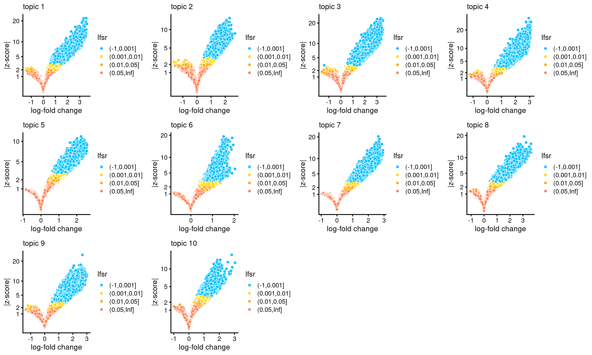

Structure plots and differential analysis of Buenrostro et al (2018) scATAC-seq data using fastTopics
Kaixuan Luo
Last updated: 2022-03-29
Checks: 7 0
Knit directory: scATACseq-topics/
This reproducible R Markdown analysis was created with workflowr (version 1.7.0). The Checks tab describes the reproducibility checks that were applied when the results were created. The Past versions tab lists the development history.
Great! Since the R Markdown file has been committed to the Git repository, you know the exact version of the code that produced these results.
Great job! The global environment was empty. Objects defined in the global environment can affect the analysis in your R Markdown file in unknown ways. For reproduciblity it's best to always run the code in an empty environment.
The command set.seed(20200729) was run prior to running the code in the R Markdown file. Setting a seed ensures that any results that rely on randomness, e.g. subsampling or permutations, are reproducible.
Great job! Recording the operating system, R version, and package versions is critical for reproducibility.
Nice! There were no cached chunks for this analysis, so you can be confident that you successfully produced the results during this run.
Great job! Using relative paths to the files within your workflowr project makes it easier to run your code on other machines.
Great! You are using Git for version control. Tracking code development and connecting the code version to the results is critical for reproducibility.
The results in this page were generated with repository version 181b83b. See the Past versions tab to see a history of the changes made to the R Markdown and HTML files.
Note that you need to be careful to ensure that all relevant files for the analysis have been committed to Git prior to generating the results (you can use wflow_publish or wflow_git_commit). workflowr only checks the R Markdown file, but you know if there are other scripts or data files that it depends on. Below is the status of the Git repository when the results were generated:
Ignored files:
Ignored: .DS_Store
Ignored: .Rhistory
Ignored: .Rproj.user/
Untracked files:
Untracked: .tmp.motifs
Untracked: analysis/motif_analysis_Buenrostro2018_v2.Rmd
Untracked: output/clustering-Cusanovich2018.rds
Untracked: paper/
Untracked: scripts/DA_Buenrostro2018_filteredpeaks.sbatch
Untracked: scripts/postfit_Buenrostro2018_filteredpeaks.sbatch
Untracked: scripts/postfit_Buenrostro2018_v2.sbatch
Unstaged changes:
Modified: analysis/assess_fits_Buenrostro2018_Chen2019pipeline.Rmd
Modified: analysis/clusters_Cusanovich2018_k13.Rmd
Modified: analysis/gene_analysis_Buenrostro2018_Chen2019pipeline.Rmd
Modified: analysis/gene_analysis_Cusanovich2018.Rmd
Modified: analysis/index.Rmd
Modified: analysis/motif_analysis_Buenrostro2018_Chen2019pipeline.Rmd
Modified: analysis/motif_analysis_Cusanovich2018.Rmd
Modified: analysis/plots_Cusanovich2018.Rmd
Modified: scripts/DA_analysis_Buenrostro2018_vsnull.R
Modified: scripts/analysis_Buenrostro2018_filteredpeaks.sh
Note that any generated files, e.g. HTML, png, CSS, etc., are not included in this status report because it is ok for generated content to have uncommitted changes.
These are the previous versions of the repository in which changes were made to the R Markdown (analysis/structureplot_DA_Buenrostro2018_filteredpeaks_k10.Rmd) and HTML (docs/structureplot_DA_Buenrostro2018_filteredpeaks_k10.html) files. If you've configured a remote Git repository (see ?wflow_git_remote), click on the hyperlinks in the table below to view the files as they were in that past version.
| File | Version | Author | Date | Message |
|---|---|---|---|---|
| Rmd | 181b83b | kevinlkx | 2022-03-29 | added structure plots for results with k = 8 and 9 |
Here we explore the structure in the Buenrostro et al (2018) scATAC-seq data inferred from the multinomial topic model.
Load packages and some functions used in this analysis.
library(fastTopics)
library(Matrix)
library(dplyr)
library(ggplot2)
library(cowplot)
library(plyr)
library(dplyr)
library(RColorBrewer)
library(DT)
library(reshape)
source("code/plots.R")Load the data
Data downloaded from original paper.
Original data
data.dir <- "/project2/mstephens/kevinluo/scATACseq-topics/data/Buenrostro_2018/processed_data/"
load(file.path(data.dir, "Buenrostro_2018_binarized.RData"))
cat(sprintf("%d x %d counts matrix.\n",nrow(counts),ncol(counts)))
samples$cell <- rownames(samples)
samples$label <- as.factor(samples$label)
# 2034 x 465536 counts matrix.Filtered out peaks with accessbility in fewer than 20 cells
i <- which(colSums(counts) >= 20)
peaks <- peaks[i,]
counts <- counts[,i]
cat(sprintf("After filtering, we have %d rows and %d columns left. \n",nrow(counts),ncol(counts)))Load data after filtering peaks with accessbility in fewer than 20 cells
res.dir <- "/project2/mstephens/kevinluo/scATACseq-topics/output/Buenrostro_2018/binarized/filtered_peaks"
load(file.path(res.dir, "Buenrostro_2018_binarized_filtered.RData"))
cat(sprintf("%d x %d counts matrix.\n",nrow(counts),ncol(counts)))
samples$cell <- rownames(samples)
samples$label <- as.factor(samples$label)
# 2034 x 126719 counts matrix.Topic model fit
K = 8
Load the K = 8 topic model fit
fit <- readRDS(file.path(res.dir, "/fit-Buenrostro2018-binarized-filtered-scd-ex-k=8.rds"))$fit
fit <- poisson2multinom(fit)Structure plot
topic_colors <- c("darkorange","limegreen","magenta","gold","skyblue",
"darkblue","dodgerblue","darkmagenta")
set.seed(1)
# labels <- factor(samples$label, levels = c("HSC", "MPP", "CMP", "GMP", "mono", "MEP", "LMPP", "CLP", "pDC", "UNK"))
labels <- factor(samples$label, c("mono","pDC","MEP","HSC","MPP","CLP",
"LMPP","CMP","GMP","UNK"))
structure_plot(fit,grouping = labels,colors = topic_colors,
# topics = 1:10,
gap = 20,perplexity = 50,verbose = FALSE)
K = 9
Load the K = 9 topic model fit.
fit <- readRDS(file.path(res.dir, "/fit-Buenrostro2018-binarized-filtered-scd-ex-k=9.rds"))$fit
fit <- poisson2multinom(fit)Structure plot
topic_colors <- c("darkorange","limegreen","magenta","gold","skyblue",
"darkblue","dodgerblue","darkmagenta","red")
set.seed(1)
# labels <- factor(samples$label, levels = c("HSC", "MPP", "CMP", "GMP", "mono", "MEP", "LMPP", "CLP", "pDC", "UNK"))
labels <- factor(samples$label, c("mono","pDC","MEP","HSC","MPP","CLP",
"LMPP","CMP","GMP","UNK"))
structure_plot(fit,grouping = labels,colors = topic_colors,
# topics = 1:10,
gap = 20,perplexity = 50,verbose = FALSE)
K = 10
Load the K = 10 topic model fit.
fit <- readRDS(file.path(res.dir, "/fit-Buenrostro2018-binarized-filtered-scd-ex-k=10.rds"))$fit
fit <- poisson2multinom(fit)Structure plot
topic_colors <- c("darkorange","limegreen","magenta","gold","skyblue",
"darkblue","dodgerblue","darkmagenta","red","olivedrab")
set.seed(1)
# labels <- factor(samples$label, levels = c("HSC", "MPP", "CMP", "GMP", "mono", "MEP", "LMPP", "CLP", "pDC", "UNK"))
labels <- factor(samples$label, c("mono","pDC","MEP","HSC","MPP","CLP",
"LMPP","CMP","GMP","UNK"))
structure_plot(fit,grouping = labels,colors = topic_colors,
# topics = 1:10,
gap = 20,perplexity = 50,verbose = FALSE)
K-means clustering on topic proportions
Define clusters using k-means, and then create structure plot based on the clusters from k-means.
k-means clustering (using 12 clusters) on topic proportions
set.seed(1)
clusters <- factor(kmeans(fit$L,centers = 12,iter.max = 100)$cluster)
summary(clusters)
structure_plot(fit,grouping = clusters,colors = topic_colors,
gap = 20,perplexity = 50,verbose = FALSE)
# 1 2 3 4 5 6 7 8 9 10 11 12
# 262 244 125 132 150 179 180 153 89 72 257 191Differential accessibility (DA) analysis on topic modeling result with \(K = 10\)
DA analysis results without shrinkage (10000 MCMC iterations)
DA_dir <- "/project2/mstephens/kevinluo/scATACseq-topics/output/Buenrostro_2018/binarized/filtered_peaks/DAanalysis-Buenrostro2018-k=10"
DA_res <- readRDS(file.path(DA_dir, "DA_regions_topics_vsnull_noshrinkage_10000iters.rds"))
summary(DA_res)
# Length Class Mode
# ar 1267190 -none- numeric
# est 1267190 -none- numeric
# postmean 1267190 -none- numeric
# lower 1267190 -none- numeric
# upper 1267190 -none- numeric
# z 1267190 -none- numeric
# lpval 1267190 -none- numeric
# svalue 1 -none- numeric
# lfsr 1 -none- numeric
# F 1267190 -none- numeric
# f0 126719 -none- numericNumber of regions selected at different p-value cutoffs:
sig_regions <- matrix(NA, nrow = 10, ncol = 3)
colnames(sig_regions) <- c("p < 0.01", "p < 0.05", "p < 0.1")
rownames(sig_regions) <- paste("topic", 1:nrow(sig_regions))
for(k in 1:10){
lpval <- DA_res$lpval[,k]
pval <- 10^(-lpval)
sig_regions[k, ] <- c(length(which(pval < 0.01)), length(which(pval < 0.05)), length(which(pval < 0.1)))
}
sig_regions
# p < 0.01 p < 0.05 p < 0.1
# topic 1 15065 21923 28375
# topic 2 12633 20427 27623
# topic 3 16774 23671 29901
# topic 4 15825 20964 25905
# topic 5 15603 21209 24833
# topic 6 6986 9405 11438
# topic 7 14769 20177 24667
# topic 8 12989 20187 26041
# topic 9 15614 20703 24928
# topic 10 9455 14334 17737Volcano plots for the regions
plots <- vector("list",10)
names(plots) <- 1:10
for (k in 1:10)
plots[[k]] <- volcano_plot(DA_res, k, labels = rep("",nrow(DA_res$z)))
# lfsr is not available, probably because "shrink.method" was not set to "ash"; lfsr in plot should be ignored
# lfsr is not available, probably because "shrink.method" was not set to "ash"; lfsr in plot should be ignored
# lfsr is not available, probably because "shrink.method" was not set to "ash"; lfsr in plot should be ignored
# lfsr is not available, probably because "shrink.method" was not set to "ash"; lfsr in plot should be ignored
# lfsr is not available, probably because "shrink.method" was not set to "ash"; lfsr in plot should be ignored
# lfsr is not available, probably because "shrink.method" was not set to "ash"; lfsr in plot should be ignored
# lfsr is not available, probably because "shrink.method" was not set to "ash"; lfsr in plot should be ignored
# lfsr is not available, probably because "shrink.method" was not set to "ash"; lfsr in plot should be ignored
# lfsr is not available, probably because "shrink.method" was not set to "ash"; lfsr in plot should be ignored
# lfsr is not available, probably because "shrink.method" was not set to "ash"; lfsr in plot should be ignored
do.call(plot_grid,plots)
DA analysis results with "ash" shrinkage (10000 MCMC iterations)
DA_dir <- "/project2/mstephens/kevinluo/scATACseq-topics/output/Buenrostro_2018/binarized/filtered_peaks/DAanalysis-Buenrostro2018-k=10"
DA_res <- readRDS(file.path(DA_dir, "DA_regions_topics_vsnull_ash_10000iters.rds"))
summary(DA_res)
dim(DA_res$z)
# Length Class Mode
# ar 1267190 -none- numeric
# est 1267190 -none- numeric
# postmean 1267190 -none- numeric
# lower 1267190 -none- numeric
# upper 1267190 -none- numeric
# z 1267190 -none- numeric
# lfsr 1267190 -none- numeric
# lpval 1 -none- numeric
# svalue 1267190 -none- numeric
# ash 3 ash list
# F 1267190 -none- numeric
# f0 126719 -none- numeric
# [1] 126719 10Number of regions selected at different lfsr cutoffs:
sig_regions <- matrix(NA, nrow = 10, ncol = 3)
colnames(sig_regions) <- c("lfsr < 0.01", "lfsr < 0.05", "lfsr < 0.1")
rownames(sig_regions) <- paste("topic", 1:nrow(sig_regions))
for(k in 1:10){
lfsr <- DA_res$lfsr[,k]
sig_regions[k, ] <- c(length(which(lfsr < 0.01)), length(which(lfsr < 0.05)), length(which(lfsr < 0.1)))
}
sig_regions
# lfsr < 0.01 lfsr < 0.05 lfsr < 0.1
# topic 1 15066 21034 25515
# topic 2 11164 18536 24600
# topic 3 15139 20590 25533
# topic 4 14210 19177 23482
# topic 5 15240 22228 26977
# topic 6 6892 9588 11650
# topic 7 13505 19528 24046
# topic 8 9983 17102 22741
# topic 9 13028 18154 22778
# topic 10 6605 10974 14385Volcano plots for the regions
plots <- vector("list",10)
names(plots) <- 1:10
for (k in 1:10)
plots[[k]] <- volcano_plot(DA_res, k, labels = rep("",nrow(DA_res$z)))
do.call(plot_grid,plots)
sessionInfo()
# R version 4.0.4 (2021-02-15)
# Platform: x86_64-pc-linux-gnu (64-bit)
# Running under: Scientific Linux 7.4 (Nitrogen)
#
# Matrix products: default
# BLAS/LAPACK: /software/openblas-0.3.13-el7-x86_64/lib/libopenblas_haswellp-r0.3.13.so
#
# locale:
# [1] LC_CTYPE=en_US.UTF-8 LC_NUMERIC=C
# [3] LC_TIME=en_US.UTF-8 LC_COLLATE=en_US.UTF-8
# [5] LC_MONETARY=en_US.UTF-8 LC_MESSAGES=en_US.UTF-8
# [7] LC_PAPER=en_US.UTF-8 LC_NAME=C
# [9] LC_ADDRESS=C LC_TELEPHONE=C
# [11] LC_MEASUREMENT=en_US.UTF-8 LC_IDENTIFICATION=C
#
# attached base packages:
# [1] stats graphics grDevices utils datasets methods base
#
# other attached packages:
# [1] reshape_0.8.8 DT_0.21 RColorBrewer_1.1-2 plyr_1.8.6
# [5] cowplot_1.1.1 ggplot2_3.3.5 dplyr_1.0.8 Matrix_1.4-1
# [9] fastTopics_0.6-97 workflowr_1.7.0
#
# loaded via a namespace (and not attached):
# [1] mcmc_0.9-7 fs_1.5.2 progress_1.2.2 httr_1.4.2
# [5] rprojroot_2.0.2 tools_4.0.4 bslib_0.3.1 utf8_1.2.2
# [9] R6_2.5.1 irlba_2.3.5 uwot_0.1.11 DBI_1.1.2
# [13] lazyeval_0.2.2 colorspace_2.0-3 withr_2.5.0 tidyselect_1.1.2
# [17] prettyunits_1.1.1 processx_3.5.2 compiler_4.0.4 git2r_0.30.1
# [21] cli_3.2.0 quantreg_5.88 SparseM_1.81 plotly_4.10.0
# [25] labeling_0.4.2 sass_0.4.1 scales_1.1.1 SQUAREM_2021.1
# [29] quadprog_1.5-8 callr_3.7.0 pbapply_1.5-0 mixsqp_0.3-43
# [33] stringr_1.4.0 digest_0.6.29 rmarkdown_2.13 MCMCpack_1.6-1
# [37] pkgconfig_2.0.3 htmltools_0.5.2 highr_0.9 fastmap_1.1.0
# [41] invgamma_1.1 htmlwidgets_1.5.4 rlang_1.0.2 rstudioapi_0.13
# [45] farver_2.1.0 jquerylib_0.1.4 generics_0.1.2 jsonlite_1.8.0
# [49] magrittr_2.0.2 Rcpp_1.0.8.3 munsell_0.5.0 fansi_1.0.3
# [53] lifecycle_1.0.1 stringi_1.7.6 whisker_0.4 yaml_2.3.5
# [57] MASS_7.3-56 Rtsne_0.15 grid_4.0.4 parallel_4.0.4
# [61] promises_1.2.0.1 ggrepel_0.9.1 crayon_1.5.0 lattice_0.20-45
# [65] hms_1.1.1 knitr_1.37 ps_1.6.0 pillar_1.7.0
# [69] glue_1.6.2 evaluate_0.14 getPass_0.2-2 data.table_1.14.2
# [73] RcppParallel_5.1.5 vctrs_0.3.8 httpuv_1.6.5 MatrixModels_0.5-0
# [77] gtable_0.3.0 purrr_0.3.4 tidyr_1.2.0 assertthat_0.2.1
# [81] ashr_2.2-54 xfun_0.30 coda_0.19-4 later_1.3.0
# [85] viridisLite_0.4.0 truncnorm_1.0-8 tibble_3.1.6 ellipsis_0.3.2